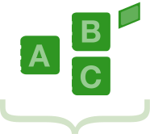

Based on the above, you’ll want to track the following on a monthly or weekly basis:

What percentage of your website traffic comes from each marketing channel
How many leads come from each marketing channel

And most importantly, how many sales came from each marketing channel
In this guide, you will discover valuable insights for optimizing your digital marketing program and measuring the impact of each tactic to ensure your efforts are generating the highest ROI possible.